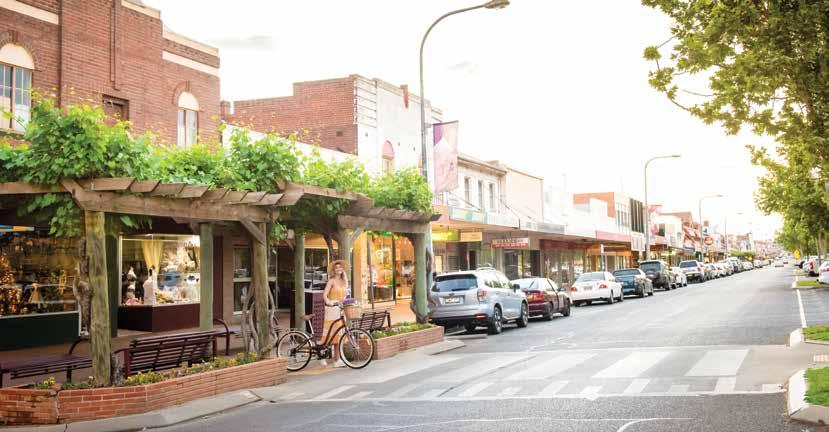

GRIFFITH NSW
We build clean, high-performing websites that help businesses in Griffith get found on Google and turn visitors into real enquiries.
Get a QuoteGriffith has a strong and growing business community, driven by agriculture, local services, and a steady flow of visitors. With more people searching online, having a clear and professional website is essential to stand out.
Whether you're in agriculture, hospitality, or a local service, your website needs to quickly show what you do, build trust, and make it easy for customers to contact you. Many businesses miss opportunities because their website is outdated, slow, or not appearing in search results.
We build clean, modern websites designed for businesses in Griffith — focused on visibility, simplicity, and helping you attract more customers and grow your business.

Local tradies and service businesses looking to be found quickly online.
Cafés, restaurants and shops that need to attract local and visiting customers.
Businesses supporting the local agricultural industry and regional economy.
Structured to help your business appear in Griffith search results.
Designed for phones, where most customers search and browse.
Lightweight websites that load quickly and keep visitors engaged.
We work with businesses across regional NSW, including Griffith and surrounding areas.
You get a simple, hands-on approach without dealing with a large agency — just a website built to help your business grow and be found.
We also support businesses in Wagga Wagga, Temora, and Cootamundra, helping regional businesses get found online and generate real enquiries.
If you're in Griffith and want a website that brings in customers, get in touch for a simple, no-pressure chat.
Get a QuoteABN: 41 946 218 773